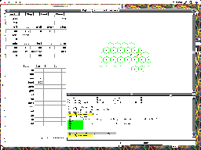
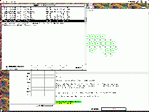

#use wml::tmpl::template name=ptkei select=screenshots

<titre> The Python/Tk Empire Interface </titre>

<td>
<a href="Mac1.png">

</a>
<td>
<a href="Mac2.png">

</a>
</table>

<p> The above pictures are courtesy of Daniel DEOCAMPO.

</body> </html>
